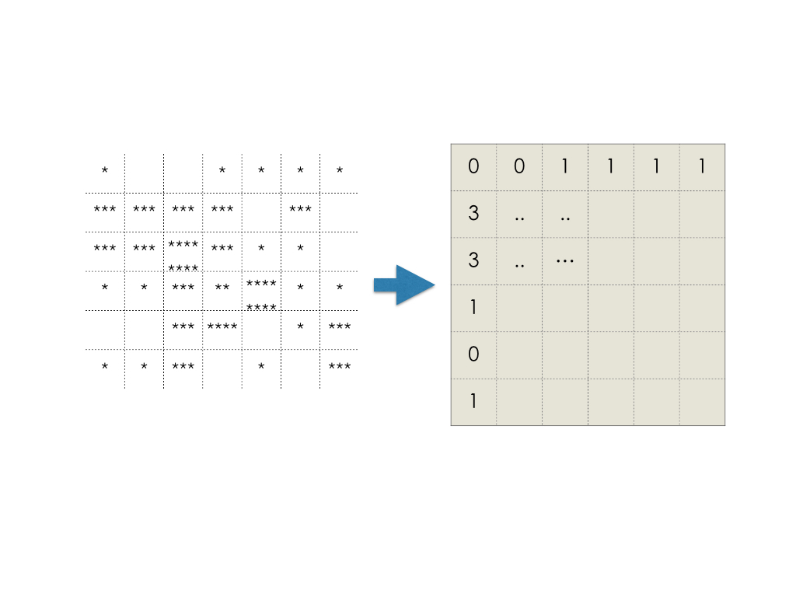

Table of contents:
1 Applications. Why do we need it?
Molecular Dynamics (MD) simulations provides is with a great tool that can analyze behavior on atomic level. It predicts motion of atoms on the scale not reachable to experimental techniques. A natural question arises how does one builds a bridge between MD simulations and experimental results. One way of doing that would be to obtain integrated quantities such Pressure, Temperature or Static Structure Factor(SSF), which can be directly seen from the experiment. For example SSF is proportional to intensity of the diffracted light in the x-ray diffraction experiment. Interested readers are encouraged to find more about SF in the following presentation, and this paper kob_et_al.
2 Mathematical background
To be able to understand certain physical phenomena one needs to be familiar with its mathematical background. For example Static Structure Factor is impossible to understand without the prior knowledge of Fourier Transform(FT).
Let us start from a definition of Fourier Series.
a Fourier series - is a way to represent a wave-like function as the sum of simple sine waves—wikipedia.org
In other words: for every function $f(x)$ (mathematically good enough) coefficients ($a_n$, $b_n$, $\omega_n$) can be found which will fit this function.
$$f(x) = \Sigma (a_n cos(\omega_n x) + b_n sin(\omega_n x)) $$
These: $a_n$ and $b_n$ are called Fourier coefficients, $cos (\omega_n x)$, $sin(\omega_nx)$ are called Fourier harmonics.
If we rewrite our Fourier Transform using complex numbers it will look like this: $$f(x) = \Sigma c_n e^{-i \omega_n x}$$
In many physical applications only absolute value squared plays role, because it represents intensity of physical value, and experiments in physical world can measure only intensity, rather than fields. For example Static Structure Factor, which is to be discussed in further detail below. Therefore value which we are interested in is:
$$ I = \Sigma \mid c_n \mid^2 = \Sigma (\mid a_n \mid^2 + \mid b_n \mid^2)$$
For better understanding let us consider following example:
- Fourier series of a simple function $f(x) = cos(x)$ is the function itself. Therefore: $ a_1 = 1 $, $a_i = 0$ for every $ i \neq 1 $, $b_i = 0$ for every $i$. So an infinite curve can be represented by a single value.
To read about Fourier Series in greater detail interested reader is encouraged to read the following sources : Fourier_expalained, wikipedia
Fourier Transform is very based on Fourier Series Fourier_transform. For every function in the regular space we find a number in the reciprocal space. In other words we define an operator which maps functions onto numbers. Therefore we analyze function by their image, which we call spectrum. For example in the figure below we have a $cos$ function of certain period, this period corresponds to spectrum of the function in reciprocal space.
Note: Infinite curve after Fourier Transform becomes a single value, whereas a peak becomes and infinite curve. This has very deep and fundamental consequences and is directly related to uncertainty principal
Interested reader might already noticed that the bigger the period is by x, the smaller is the $k$ value - the wave vector .
3 Theoretical background
Let us look at the Fig. 2.. Visually we can identify periodic structure on the left side and a random structure on the right side. How can one quantify this order?
To be able to quantify this order may use Radial Distribution Function(RDF) RDF . By now we will define RDF as an average number of atoms on the distance $r$ from a given atom, averaged by all atoms. Later we will define RDF in more rigorous way.
- We see a clear periodicity on the plot, which corresponds to the periodicity of the structure. Although Radial Distribution Function seems to provide us with important information about system structure it is still not very convenient to use. Things get even more complicated when we have to periodic structures (structure within other structure) like in the Fig. 3.
- So we are not there yet. We want to be able to identify a periodic structure by just a number, not a function.
If we recall our Fourier series whenever we had something periodic in distance space we will have a peak in the reciprocal space. And that is what we want - an easy way to track positions of atoms!
Now, if we have a structure with two characteristic distances we will be represented by two peaks in the reciprocal space.
Now lets formulate statements above in a mathematically sound way:
If we have a system of atoms with positions $ \mathbf{r}_{j} $, then
Radial distribution function $g(r)$:
$$g(r) = \frac{V}{N^{2}}\left\langle \sum_{i=1}^{N}\sum_{j\neq i}\delta(\vec{r} - \vec{r}_{ij})\right\rangle \quad\text{with} \vec{r}_{ij}:= \vec{r}_{j} - \vec{r}_{i} $$
, the static structure factor is defined as:
$$ S(\mathbf{q}) = \frac{1}{N} \left | \sum_{j=1}^{N} \mathrm{e}^{-i \mathbf{q} \mathbf{r}_{j}} \right | ^2$$
Which is an absolute value of Fourier coefficient squared. It can equally expressed the following way:
$$ S(\mathbf{q}) = 1 + \frac{1}{N} \left \langle \int_V \mathrm{d} \mathbf{r} \, \mathrm{e}^{-i \mathbf{q} \mathbf{r}} \sum_{i \neq j} \delta \left [ \mathbf{r} - (\mathbf{r}_i - \mathbf{r}_j) \right ] \right \rangle $$
Which is the definition we will work with.
4 Implementation
Now several points need to be clarified:
To implement the algorithm above we need to figure out how to :
- to evaluate integral
- to deal with delta function
Evaluating integral with exponent would be performing a Fourier transform, therefore we can use tools available for that : FFT - fast fourier transform.
Delta function will be considered by binning and histograming our atomic positions $\mathbf{r}_{j}$, which will be demonstrated on 2D example for convenience.
To start with lets import everything that we will need for our program:
import numpy as np
from MDAnalysis import \*
from read_parameters import read_traj_vmd
import os
import save_plots
from numpy.fft import fftn, fftshift
import scipy
from scipy.integrate import quad
import matplotlib
matplotlib.use('Agg')
import matplotlib.pyplot as plt
Lets define some necessary variables and bin the data:
u = Universe(psffile+'.psf', args.traj)
Ndiv = 201
# create arrays of positions, get the box dimenstions
X = u.atoms.positions
box = u.trajectory.ts.dimensions[:-3]
length_x = box[-1] # be careful here
x = np.linspace(-length_x, length_x, Ndiv+1, endpoint=True)
# binning and histogramming
f, edges = np.histogramdd(X, bins=(Ndiv, Ndiv, Ndiv))
delta = x[1]-x[0]
Ok, now we are all set to do Fourier Transform and "go" to reciprocal space
ftk = (fftshift(fftn(fftshift(f))\*delta))
sk = np.abs(ftk\*\*2) / float(Natoms)
# basis in reciporal space
omega = 2\*np.pi\*np.arange(Ndiv-1) / (length_x)
omega -= omega[int(Ndiv/2)-1]
We are almost all set, the only thing is that we need to radially average our data, since we are interested only in the $|q|$
C = norm_sq(sk, k1, k2, k3, Ndiv, kmax)
def norm_sq(sk, k1, k2, k3, Ndiv, kmax):
"""
calculates normk = norm of each vector in grid=|k1,k2,k3|
bins in, calculating average sq of each bin
output: C[Nbins,3] = binindex, kval = normk, sq
"""
normk = np.sqrt(k1\*k1 + k2\*k2 + k3\*k3)
# array to histogram - dk,kmax,Nbins
Nbins = int(1.5\*Ndiv)
dk = kmax/float(Nbins)
C = np.ones((Nbins+1, 3))
for i in range(Ndiv-1):
for j in range(Ndiv-1):
for k in range(Ndiv-1):
kval = normk[i, j, k]
bindex = int(kval/dk)
C[bindex, 0] += 1
C[bindex, 1] += kval
C[bindex, 2] += sk[i, j, k]
C[:,2] /= C[:,0]
C[:,1] /= C[:,0]
return C
Special thanks for Amanda Parker.
comments powered by Disqus